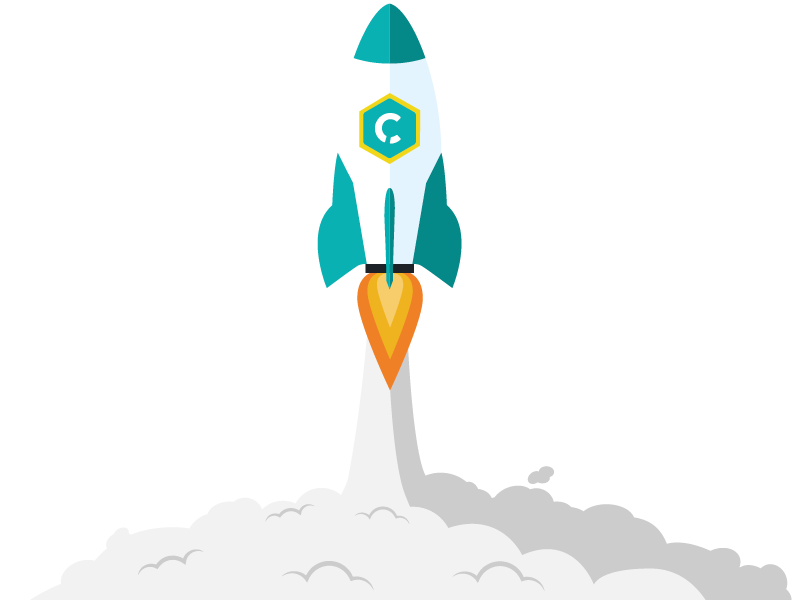
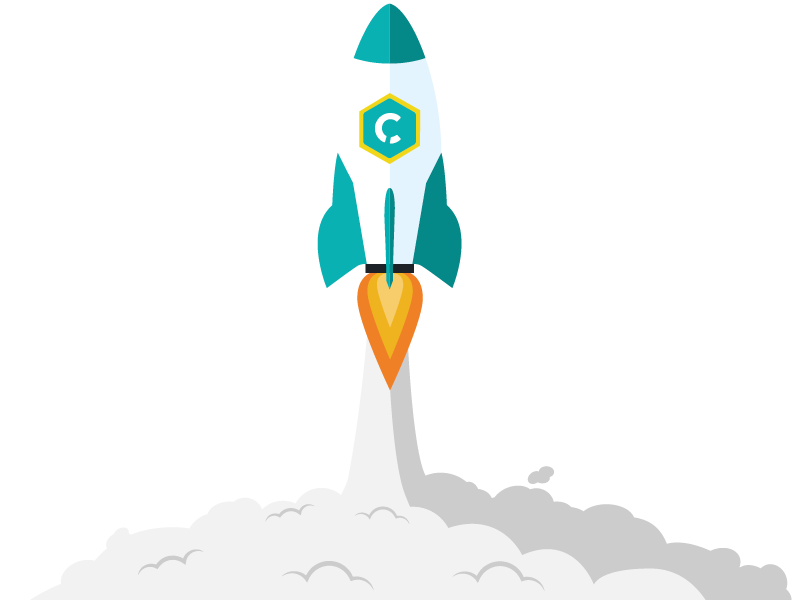

UX/UI DESIGNER (w/m)

Hallo liebe Bewerberinnen und Bewerber,
wir suchen einen UX/UI Designer (w/m) zur Ergänzung unserer Teams.
Unser Spielfeld ist die digitale Welt. Als junges und dynamisches Unternehmen lieben wir Projekte, die uns herausfordern und innovative Lösungen verlangen. Wir verwenden neueste Web- und App-Technologien, um die digitale Transformation unserer Kunden voranzubringen. Dabei erschaffen wir branchenrevolutionierende Konzepte und Lösungen.
Wir leben eine flache Hierarchie, in der jeder eine anspruchsvolle Aufgabe hat. Als interdisziplinäres Team unterstützen wir uns gegenseitig und schaffen einzigartige Produkte wie das DealerCenter oder GRUD. Von der Design-Konzeption bis zur Umsetzung einer gesamten Omnichannel-Infrastruktur entwickeln wir alles unter einem Dach.
Und hier kommst Du ins Spiel. Möchtest Du gemeinsam mit uns die Zukunft der Digitalisierung gestalten und unser Team unterstützen noch besser zu werden? Dann freuen wir uns auf Deine aussagekräftige Bewerbung.
Du kannst Deine Unterlagen entweder über recruit(at)campudus.com an Max Stemplinger schicken, oder Du schlägst Dich durch das härteste 2-Minuten-Bootcamp aller Zeiten.
Deine Aufgabenbereiche
- selbstständiges Entwerfen von einzigartigen UI- und UX-Konzepten
- Entwickeln von gesamten User Interfaces und Bedienlogiken für verschiedene innovative Systeme
- Erstellen von Prototypen und Klick-Dummies als Vorbereitung
- Erschaffen von Design-Konzepten für neue Softwareprodukte in einem kleinen Team
- agiles und teamorientiertes Arbeiten mit konstruktivem Feedback von Kunden und Kollegen
- Erstellen von Wireframes und interaktiven Prototypen zur Unterstützung unserer Developer
Deine Qualifikationen
„Do what you do best!“
Wir setzen Deine Fähigkeiten dort ein, wo Deine Interessen und Stärken liegen!
- designorientiertes Studium im Bereich Medieninformatik, Interface Design, Software Engineering mit UI-Focus oder einem vergleichbaren Studiengang
- Leidenschaft für gutes Design und clevere UX/UI Konzepte
- ausgeprägte Erfahrungen in Adobe CS, Sketch, Axure, Flinto und Principle oder ähnlichen Programmen
- Erfahrungen im Erstellen von Wireframes und Prototypen
- Begeisterung für Designtrends und aktuelle Technologien
- Du sprichst fließend Deutsch, Englisch ist ein Plus
Unsere Benefits
- die Möglichkeit, den Erfolg des gesamten Teams maßgeblich mitzugestalten
- ein dynamisches, junges und motiviertes Team
- besten Espresso, Kaffee, Cappucchino und Latte Macchiato for free
- einen Arbeitsplatz mit hochwertiger, ergonomischer Ausstattung und schöner Lage
- neue und selbstgewählte Hardware
- flexible Arbeitszeiten und Arbeitsgestaltung
- Weiterentwicklungsmöglichkeiten
Unser aktueller Design-Stack
- Design: Adobe CS, Sketch
- Prototyping: Node.JS, Scala

 
